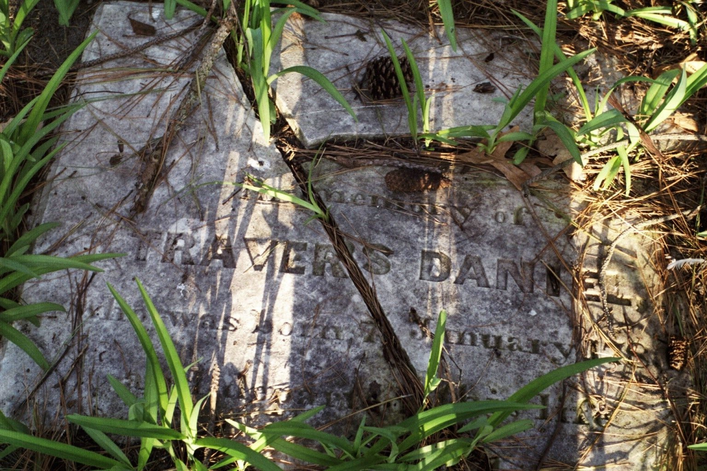

Travers Daniel
1780–1861
Life Events
Born: 1780
Family
Father: James Daniel
Mother: Rebecca Travers
Spouse:
Children
Military Service
No military service information has been added.
Biography
Travers Daniel was born around 1780 and died in 1861. His exact birth and death dates and locations remain to be verified. FamilySearch identifies James Daniel (1752–1817) and Rebecca Travers (1756–1815) as his parents. These relationships are also described in the privately compiled family history *The Daniel Name*, but remain subject to verification against contemporary records.
Travers married Mary L. Wallace (1789–1862) on January 11, 1808, in Somerset County, Maryland, according to a historical marriage listing that records their names as "Daniel Traverse" and "Wallace Mary." The spelling "Traverse" is one of several variations of his given name found in historical records.
During the War of 1812, Travers Daniel is believed to have served as a private in the Maryland Militia. A surviving detachment return for the 23rd Regiment of the Somerset County Militia, Tenth Brigade, lists "Travis Daniel" among the privates of its 2nd Battalion. The return was prepared pursuant to brigade and division orders dated May 15. Although the document uses the name Travis rather than Travers, the identification is strongly supported by the documented variations of his given name, his association with Somerset County, and family genealogical research. The surviving roster establishes his inclusion in a militia detachment but does not specify his length of service or establish participation in a particular battle.
Additional family research supports this identification. A researcher previously contacted a descendant of Travers Daniel about placing a commemorative wreath on his gravestone at Daniel Family Cemetery in Wenona, Maryland, and supplied a copy of the Maryland militia roster. The original correspondence has not been preserved, and the researcher's identity and supporting documentation remain unknown.
An 1825 historical map of Great Devils Island, now known as Deal Island, identifies land associated with "Traverse Daniel" near the southern portion of the island. The map provides evidence of his connection to the area where the Daniel family lived. The precise relationship between this mapped property and the Daniel Family Cemetery has not yet been established through land records.
Travers's last will and testament, dated August 14, 1858, was proved in Somerset County on May 24, 1861. The will identifies his wife Mary and sons William Daniel and James Travers Daniel, and contains provisions for additional family members, including daughters and grandchildren. The document provides important contemporary evidence of his family relationships and property arrangements.
Travers is also identified as the father of James Travers Daniel (1830–1902) on James's Maryland death certificate. That certificate appears to identify James's mother as Molly Wallace, possibly another name for Mary L. Wallace.
Travers Daniel is buried at Daniel Family Cemetery in Wenona, Somerset County, Maryland. His gravestone, bearing the years 1780–1861, has fallen and deteriorated. Surviving fragments have been photographed and preserved in the family archive.
Photos
No additional photographs have been added.
Grave & Burial

Sources
-
1808 Marriage of Traverse Daniel and Mary Wallace
Type: marriageHistorical marriage register or compiled marriage listing recording the marriage of 'Daniel Traverse' and 'Wallace Mary' on January 11, 1808. The names appear in surname-first order. The groom's given name is recorded as Traverse, a spelling variation of Travers. The source supports the marriage of Travers Daniel and Mary Wallace; the original register or compilation title remains to be established.
Location: Somerset County, Maryland
Supports: Marriage of Traverse Daniel and Mary Wallace, Marriage date of January 11, 1808, Historical spelling of the groom's name as Traverse
-
1825 Map of Great Devils Island (Deal Island), Maryland
Type: mapHistorical map dated 1825 depicting Great Devils Island, now known as Deal Island, in Somerset County, Maryland. The map identifies land associated with 'Traverse Daniel' near the southern portion of the island, east of the road, above the word 'Great.' A nearby handwritten annotation appears to indicate a distance of one mile from Piney Point, although the wording requires further verification. The map provides historical evidence of land associated with Travers Daniel in 1825. The Daniel Family Cemetery is located in the general area, according to family observations, but its precise relationship to the mapped property has not yet been established through deeds or surveys. The map's creator and original repository have not yet been identified.
Location: Great Devils Island (Deal Island), Somerset County, Maryland
Supports: Identification of land associated with Traverse Daniel in 1825, Historical geography of Great Devils Island (Deal Island), Research into Daniel family landownership near Wenona, Maryland, Historical context for the Daniel Family Cemetery
-
1861 Last Will and Testament of Travers Daniel
Type: probateLast will and testament of Travers Daniel of Somerset County, Maryland, dated August 14, 1858, and proved May 24, 1861, before the Somerset County Register of Wills. The nine-image probate file includes the handwritten will and witness testimony. The will identifies his wife Mary, names sons including William Daniel and James Travers Daniel, and contains provisions for daughters and grandchildren. Estate number SDAT61UN0928. Original image file MARY0053D_14-Adams-Ward_M_00029.tif. Further transcription is needed to identify all beneficiaries and their relationships accurately.
Location: Somerset County, Maryland
Supports: Probate of Travers Daniel's will on May 24, 1861, Identification of Mary as his wife, Identification of William Daniel as his son and executor, Identification of James Travers Daniel as his son, Evidence concerning children, grandchildren, and property inheritance
-
Maryland Militia in the War of 1812 – Travis Daniel, Somerset County
Type: militaryMaryland Militia in the War of 1812, Volume 1 (Eastern Shore Counties), PDF page 11, printed page 4. Under the Tenth Brigade, a detachment return from the 23rd Regiment of the Somerset County Militia lists 'Travis Daniel' among the privates of the 2nd Battalion. The return refers to division orders dated May 15, but the year of those orders is not specified in the excerpt. Travis Daniel is believed to be Travers Daniel (1780–1861), whose given name also appears as Traverse in other historical records. The identification is supported by family research and a previous inquiry concerning a commemorative wreath for his gravestone at Daniel Family Cemetery, Wenona, Maryland. The roster does not establish the duration of his service or participation in combat.
Location: Somerset County, Maryland
Supports: A man recorded as Travis Daniel was listed as a private in the 2nd Battalion of the 23rd Regiment, Somerset County Militia., The detachment was associated with the Tenth Brigade of the Maryland Militia., The return was prepared pursuant to orders dated May 15., The identification of Travis Daniel as Travers Daniel (1780–1861) is supported by family research but is not explicitly established by the roster.
-
Daniel Family — Genealogical History
Type: family_historyPrivately compiled family genealogy titled The Daniel Name, probably prepared by Daniel Leroy Drake, son of Anna Wilson Daniel Drake and grandson of James Fairfax Daniel. The author identifies Anna Wilson Daniel as his mother, describes personally knowing James Fairfax Daniel, and references family records in his possession. The genealogy traces the Daniel family from Rowan County, North Carolina, to Deal Island, Maryland, and documents later generations of the Daniel, Drake, Webster, and related families. The latest date identified in the document is 1977, suggesting compilation or revision no earlier than that year. Copies were circulated among family members. According to family recollection, a copy was held by the Kramer-Webster family during the 1980s and certainly before 1993. The exact author attribution, compilation date, and original distribution date have not been independently verified.
Location: Rowan County, North Carolina; Somerset County, Maryland
Supports: Compiled genealogy of James Daniel and Rebecca Travers Adderton, Identification of Travers Daniel as their son, Marriage of Travers Daniel and Mary Wallace, Daniel family migration and connections between North Carolina and Maryland, Family relationships across subsequent Daniel generations